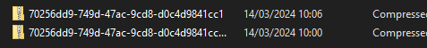
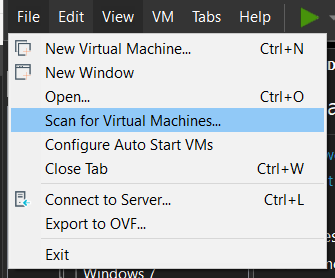
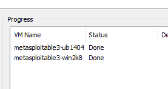
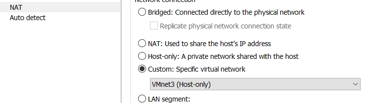
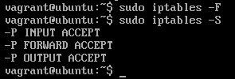
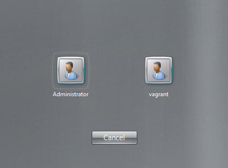
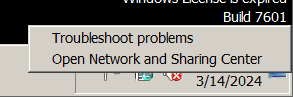
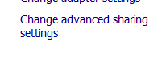
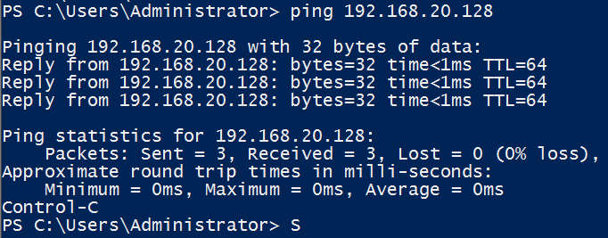

Entorno Metasploitable3
Este entorno vulnerable va a estar formado por dos servidores, un primer servidor Linux, que se corresponderá
con un Ubuntu y un segundo servidor Windows que se corresponderá con un Windows Server.
https://github.com/rapid7/metasploitable3
Vamos al siguiente enlace y descargamos las imágenes para nuestra versión de sotware que en este caso será vmware_desktop.
https://app.vagrantup.com/rapid7/
Con ambos archivos descargados les cambiamos la extensión a .zip

Al terminar la descompresión, con los archivos resultantes repetimos el proceso.
Cambiamos el nombre a las carpetas y las movemos a nuestro directorio de máquinas virtuales para añadirlas a VMware.


Vamos a configurar la red y algunas configuraciones más.
- →
→ Ubuntu:
Usuario: vagrant
Password: vagrant
Configuramos una subred que en mi caso asigna a los nodos en 192.168.20.0


Vamos a eliminar las reglas IPtables de la máquina que se tratan de un “firewall” implementado en máquinas linux para evitar problemas o limitaciones de conexión entre las máquinas.
iptables -S

sudo iptables -F

Si se reinicia la máquina puede que se vuelvan a añadir así que si existen problemas de conexión es conveniente revisar si existen o no estas reglas.
- →
→ Windows:

Ambos usuarios tienen la contraseña “vagrant"
No está activada pero no importa y además pedirá reiniciar la máquina para instalar vmware tools.
Añadimos la máquina a nuestra subred

vamos a las opciones de red


Cambiar opciones avanzadas
Activamos todas las opciones

Comprobamos conectividad entre las máquinas
